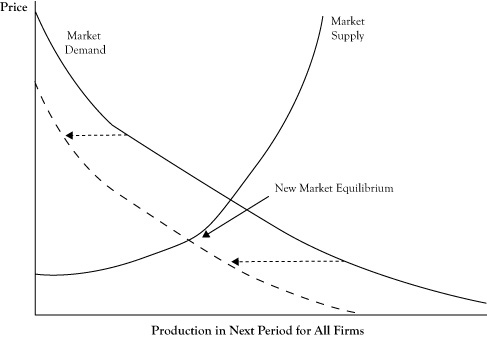
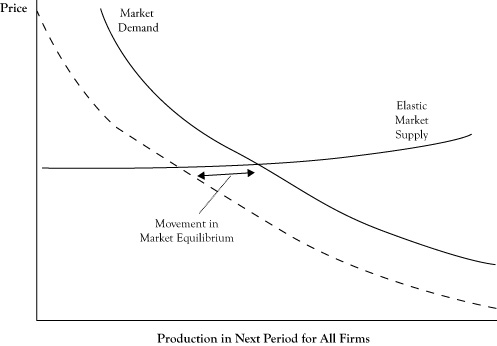
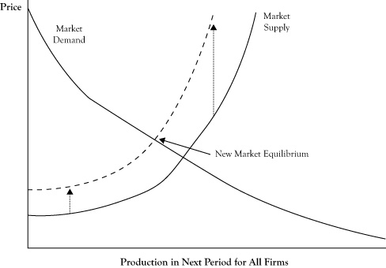
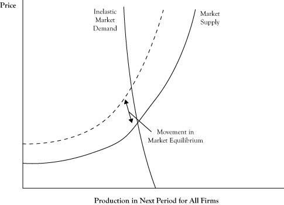

In addition to the factors that cause fluctuations in the market equilibrium, some developments may lead to sustained changes in the market equilibrium. For example, if a new product becomes available that is a viable substitute for an existing product, there is likely to be either a persistent drop in the quantity consumed of the existing good or a reduction in the market price for the existing good.
The impact of these persistent changes can be viewed in the context of changes in the behavior of buyers or the operations of sellers that cause a shift in the demand curve or the supply curve, respectively. In the case of the new availability of a close substitute for an existing product, we would expect the demand curve to shift to the left, indicating that at any market price for the existing good, demand will be less than it was prior to introduction of the substitute. As another example, consider the supply curve for gasoline after an increase in the price of crude oil. Since the cost of producing a gallon of gasoline will increase, the marginal cost of gasoline will increase at any level of production and the result will be an upward shift in the supply curve.
It is often of interest to determine the impact of a changing factor on the market equilibrium. Will the equilibrium quantity increase or decrease? Will the equilibrium price increase or decrease? Will the shift in the equilibrium point be more of a change in price or a change in quantity? The examination of the impact of a change on the equilibrium point is known in economics as comparative staticsThe examination of the impact of a change on the equilibrium point..
In the case of a shifting demand curve, since the supply curve is generally upward sloping, a shift of the demand curve either upward or to the right will result in both a higher equilibrium price and equilibrium quantity. Likewise, a shift in the demand curve either downward or to the left will usually result in a lower equilibrium price and a lower equilibrium quantity. So in response to the introduction of a new substitute good where we would expect a leftward shift in the demand curve, both the equilibrium price and quantity for the existing good can be expected to decrease (see Figure 6.5 "Shift of Market Demand to the Left in Response to a New Substitute and Change in the Market Equilibrium").
Whether a shift in the demand curve results in a greater relative change in the equilibrium price or the equilibrium quantity depends on the shape of the supply curve. If the supply curve is fairly flat, or elastic, the change will be primarily in the equilibrium quantity (see Figure 6.6 "Impact of Elasticity of the Supply Curve on the Impact of a Shift in the Demand Curve"). An elastic supply curve means that a small change in price typically results in a greater response in the provided quantity. If the supply curve is fairly vertical, or inelastic, the change in equilibrium will be mostly seen as a price change (see Figure 6.7 "Impact of Elasticity of the Supply Curve on the Impact of a Shift in the Demand Curve").
Figure 6.5 Shift of Market Demand to the Left in Response to a New Substitute and Change in the Market Equilibrium
Figure 6.6 Impact of Elasticity of the Supply Curve on the Impact of a Shift in the Demand Curve
The shift is generally in terms of the quantity when the supply curve is elastic.
Figure 6.7 Impact of Elasticity of the Supply Curve on the Impact of a Shift in the Demand Curve

The shift is generally in terms of the price when the supply curve is inelastic.
A shift in the supply curve has a different effect on the equilibrium. Because the demand curve is generally downward sloping, a shift in the supply curve either upward or to the left will result in a higher equilibrium price and a lower equilibrium quantity. However, a shift in the supply either downward or to the right will result in a lower equilibrium price and a higher equilibrium quantity. So for the example of the gasoline market where the supply curve shifts upward, we can expect prices to rise and the quantity sold to decrease (see Figure 6.8 "Shift of Market Supply Upward in Response to an Increase in the Price of Crude Oil and Change in the Market Equilibrium").
The shape of the demand curve dictates whether a shift in the supply curve will result in more change in the equilibrium price or the equilibrium quantity. With a demand curve that is flat, or elastic, a shift in supply curve will change the equilibrium quantity more than the price (see Figure 6.9 "Impact of Elasticity of the Demand Curve on the Impact of a Shift in the Supply Curve"). With a demand curve that is vertical, or inelastic, a shift in the supply curve will change the equilibrium price more than the equilibrium quantity (see Figure 6.10 "Impact of Elasticity of the Demand Curve on the Impact of a Shift in the Supply Curve").
The characterization of a demand curve as being elastic or inelastic corresponds to the measure of price elasticity that was discussed in Chapter 3 "Demand and Pricing". Recall from the discussion of short-run versus long-run demand that in the short run, customers are limited in their options by their consumption patterns and technologies. This is particularly true in the case of gasoline consumption. Consequently, short-run demand curves for gasoline tend to be very inelastic. As a result, if changing crude oil prices results in an upward shift in the supply curve for gasoline, we should expect the result to be a substantial increase in the price of gasoline and only a fairly modest decrease in the amount of gasoline consumed.
Figure 6.8 Shift of Market Supply Upward in Response to an Increase in the Price of Crude Oil and Change in the Market Equilibrium
Figure 6.9 Impact of Elasticity of the Demand Curve on the Impact of a Shift in the Supply Curve

The shift is generally in terms of the quantity when the demand curve is elastic.
Figure 6.10 Impact of Elasticity of the Demand Curve on the Impact of a Shift in the Supply Curve
The shift is generally in terms of the price when the demand curve is inelastic.